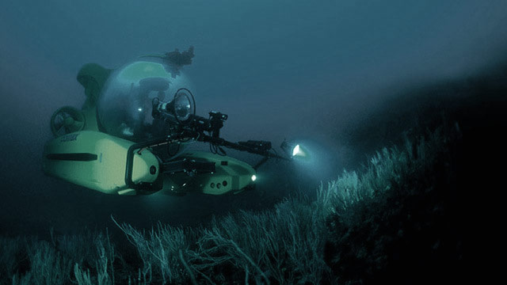

Mark Shrope and John Pickrell | September 04, 2006 11:54am
Even in the 21st century, the deep sea remains almost entirely unknown. We have sampled less than 1% of the seafloor - we are now beginning to realise the deep is home to a spectacular diversity of organisms.
Humpback Whale — Photograph from Getty Images

Photograph by National Geographic — October 14, 2010
Studying deep sea creatures is problematic; since, with the extreme change in pressure, these creatures can't survive for very long.